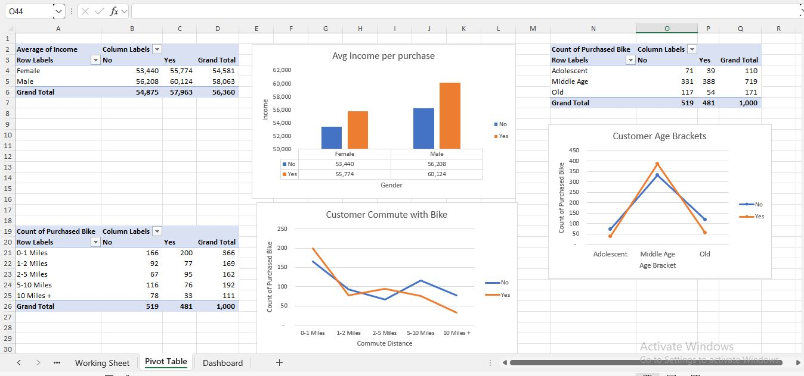
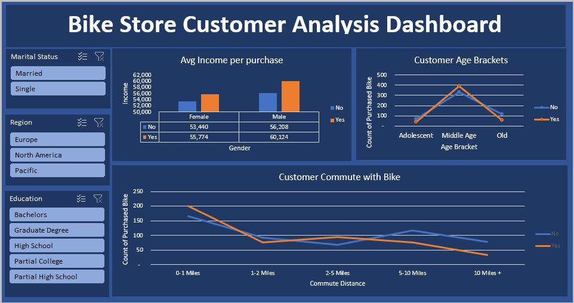

Project Details
Introduction
- Objective: The objective is to determine the ideal customer profile for a bike shop by analyzing various demographic and behavioral factors.
- Background: The dataset includes 1,026 records on customer demographics, preferences, and purchasing behavior. After data cleaning, the final dataset comprises 1,000 records.
- Scope: The analysis focuses on identifying patterns in age, income, education, occupation, and other factors influencing bike purchases.
Data Description
- Dataset Overview: The dataset contains the following variables: Marital Status, Gender, Income, Children, Education, Occupation, Home Owner, Cars, Commute Distance, Region, Age, and Purchased Bike.
- Data Cleaning Steps:
- Duplicate entries removed, reducing records from 1,026 to 1,000.
- Standardized categorical data (e.g., "m" to "male" and "f" to "female").
- Created age groups for better visualization.
- Ensured no missing data and proper data types for each field.
Methodology
- Data Cleaning:
- Removed duplicates and standardized categorical variables.
- Grouped continuous variables like age into ranges.
- Exploratory Data Analysis (EDA):
- Created pivot tables to identify trends and patterns.
- Used charts and visualizations to summarize key insights.
- Tools Used: Microsoft Excel for data cleaning, analysis, and visualization.
Results and Findings
- Age Group: The largest group of bike purchasers is aged 31-50.
- Gender: Gender distribution shows no significant trend.
- Income Range: Purchasers predominantly belong to the middle-income range.
- Education Level: Most customers have completed partial high school education.
- Occupation: Customers in management positions are the most frequent bike purchasers.
- Region: North America is the leading region for bike purchases.
- Commute Distance: Most purchasers have a commute distance of 0-1 mile.
- Number of Cars Owned: The majority of purchasers own 0-1 cars.
- Children: Most purchasers do not have children.
- Marital Status: Married customers are more likely to purchase bikes.
- Home Ownership: No significant correlation between homeownership and purchasing likelihood.
Discussion
- Interpretation: The findings suggest that middle-aged, married individuals in management positions from North America are the most common bike purchasers.
- Implications: Marketing strategies should focus on these demographics to maximize effectiveness.
- Limitations: The analysis relies on a cleaned dataset, which may not capture all potential biases in the original data.
Recommendations
- Target Age Range 31-50: Use targeted advertisements, promotions, and events.
- Focus on Management Professionals: Offer high-end, performance-focused bikes and accessories.
- Region-Specific Strategies: Increase inventory and promotions in North America.
- Engage Married Customers: Introduce couple-focused promotions and financing options.
- Affordable Options for Multi-Car Owners: Provide financing or payment plans for high-end bikes.
Conclusion
This analysis has identified key customer segments for the bike shop. By implementing targeted marketing and sales strategies, the shop can attract more ideal customers and enhance overall sales performance.
Appendix
Figures

Fig 1. Cleaned Dataset Snapshot
Fig 2. Pivot Tables & Charts
Fig 3. Bike Sales Dashboard